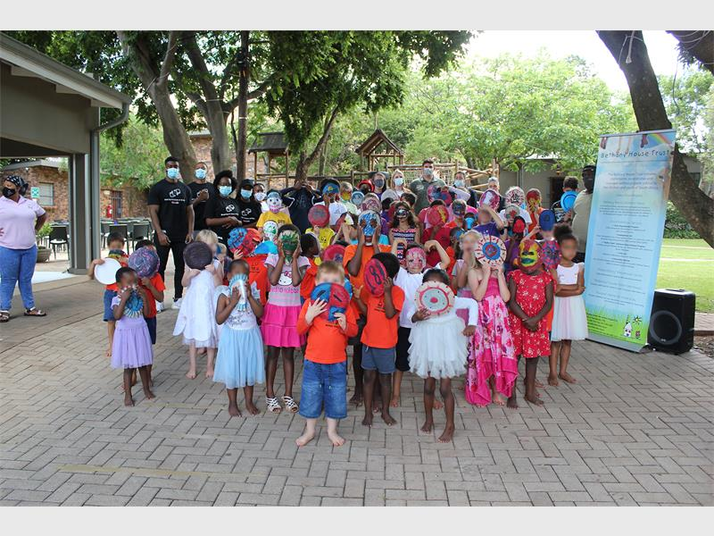
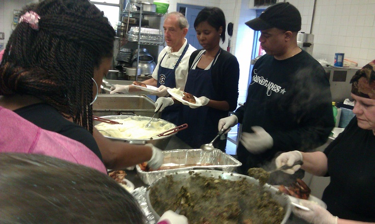
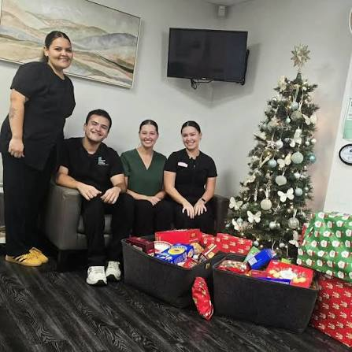
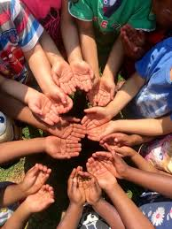
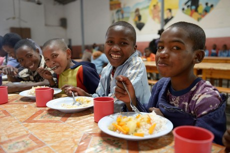
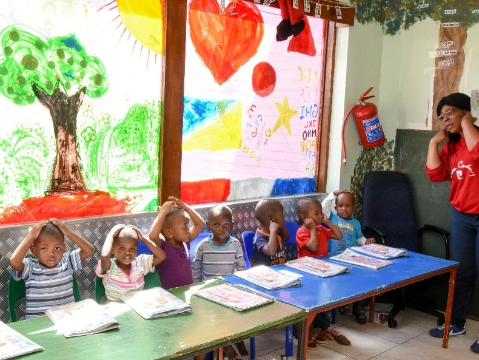
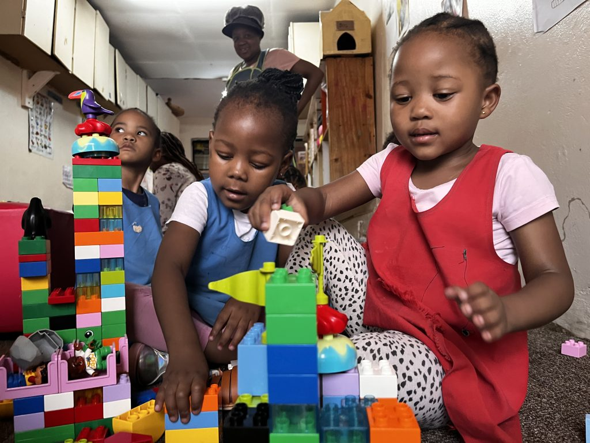
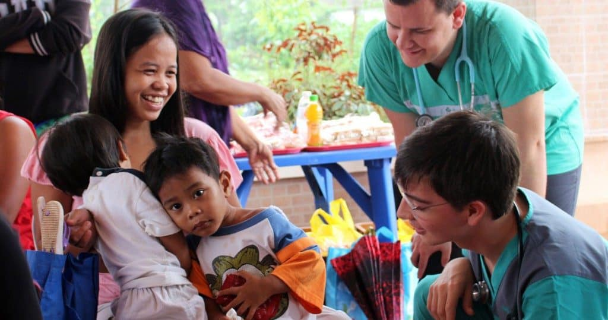
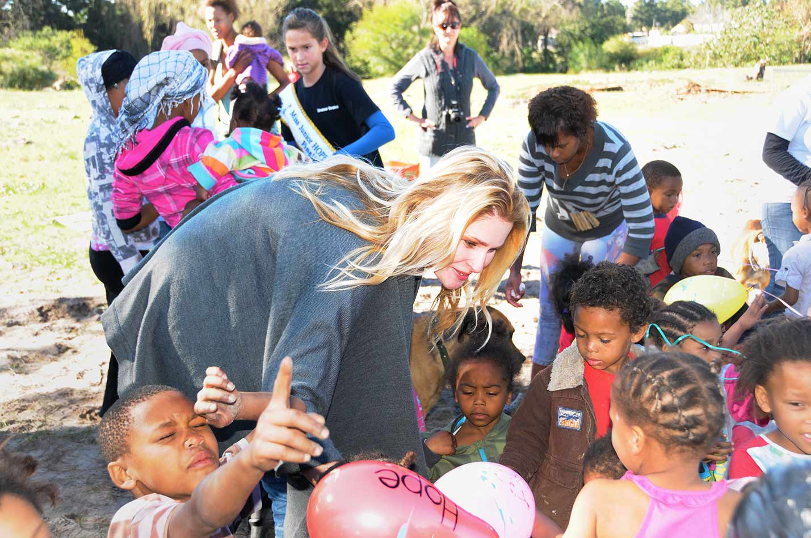

Our Programmes
Supporting little children, young people and small families




Bethany House Trust runs programmes that support orphaned and vulnerable children across Gauteng, in krugerdrop and West Rand.Each programme is there to give children the care, support and opportunities to grow and have a better future.
Below is more information about each of our programmes.
Click any photo on this page to see it larger.
Child and Youth Care Centres.
We provide a safe and caring home for around 150 orphaned and vulnerable children in our three centres.
Each centre provides the following:
- 24-hour care
- a family-like home
- we make a child feel safe,loved and cared for.


An open door programme.
This programme provides children with a safe place to stay when they need to be removed from unsafe situations, While they are here,our social workers work with them and their familys to find the best way forward wheather that means:
- Going back home to their family
- moving to a foster home
- or staying with us in one of our centres


Education Support Programmes
Many of the children we take in and care for,struggle at school because of what they have been through.Our Education Support,gives them the extra help they need to catch up,stay in school and believe in themselves and be proud to be who they are.
- Helping children get back to school
- Helping with homework and tutoring
- Youth development programme


Social-Care Support Programmes
Our social workers walk alongside children and familes who are going through difficult times. We help them find ways to cope and build resilience, support them in caring for their children and provide food to families who are struggling, this is how we show our support
- Child protection
- Therapy and counselling
- Food security outreach
- Family support
- Parenting skills

